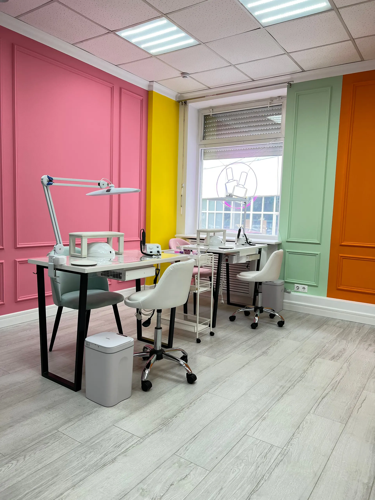
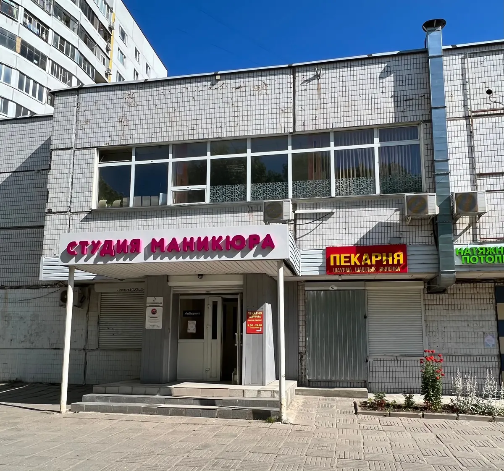
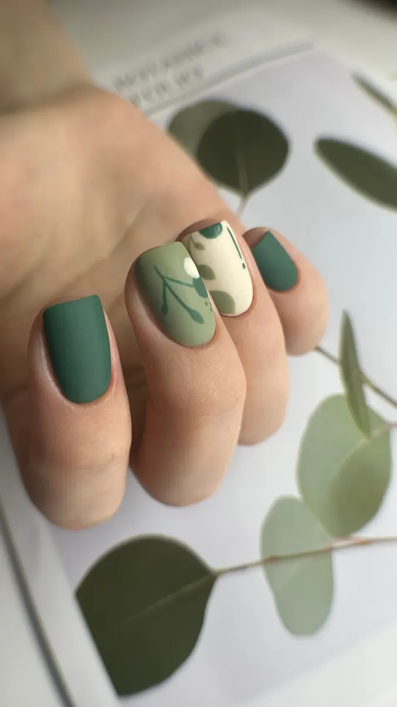
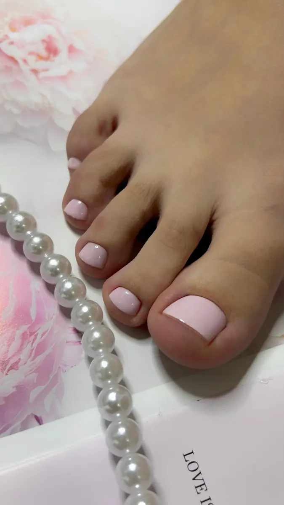

Студия маникюра · Зеленоград
Маникюр и педикюр в Зеленограде – ровно и без проплешин
Цены ниже, запись по телефону – выберите услугу и время. Ежедневно с 9 до 21, корпус 1106Е.
- Маникюр с покрытием – 2400 ₽
- Атмосфера и интерьер – 100%
- Ежедневно 09:00–21:00

Что есть в студии
Входит
- Комбинированный маникюр
- Укрепление гелем
- Smart-педикюр с лёгким массажем
Отдельно, если нужно
- Мужской маникюр и педикюр
- Снятие покрытия
- Напитки на выбор
Цена названа до записи
Прайс с карточки на Яндекс Картах.
Маникюр
- Комбинированный с покрытиембез укрепления2 400 ₽
- Комбинированный + укрепление гелем + покрытие2 800 ₽
- Без покрытия1 300 ₽
- Мужской маникюр1 600 ₽
- Снятие покрытия400 ₽
Педикюр
- Smart-педикюр (стопы + пальчики) с покрытием3 300 ₽
- Smart-педикюр (стопы + пальчики) без покрытия3 000 ₽
- Smart-педикюр (пальчики) с покрытием2 600 ₽
- Smart-педикюр (пальчики) без покрытия2 000 ₽
- Мужской педикюр3 500 ₽
Цену дизайна назовём по телефону.
Как проходит запись
- 01
Выбираете услугу и время
Прямо на сайте, без долгих разговоров.
- 02
Подтверждаем запись
Если время не подходит – подберём другое.
- 03
Встречаем в студии
Администратор покажет, где что, и предложит напитки.
- 04
Уходите с ровным покрытием
Прокрашено и по бокам, и под кутикулу.



За что нас любят
Ни одной проплешины
«Прокрашен ноготь идеально и по бокам и под кутикулу!» – из отзыва.
Запись без звонков
«Записалась онлайн быстро, без звонков и долгих разговоров» – из отзыва.
Яркая чистая студия
Атмосфера и интерьер – 100% в отзывах на Картах.
Встречают как гостя
«Проводила к месту маникюра, предложила напитки на выбор» – из отзыва.
Отзывы с Яндекс.Карт
«Маникюр делала у мастера Надюши, она работала очень аккуратно, результатом довольна! Так же сделала педикюр у мастера Анастасии Грин, работа выполнена быстро и аккуратно👍🏼 А ещё очень милая студия, чистая и вкусно пахнет, отдельный респект за уборную комнату 🌸 По телевизору шла программа «Четыре Свадьбы», было очень весело 😁»
Светлана · 31 июля
«Редко пишу отзыв, но эта девушка сделала 100% идеальный маникюр! Первый раз у меня ногти не клюют и не расширяется ногтевая пластина при отрастании! Прокрашен ноготь идеально и по бокам и под кутикулу! Ни одной проплешины. По времени 2.20ч вышло,но это того стоит! Спасибо!»
Светлана Боган · 12 июня
«Очень выручили, сделали прекрасный маникюр! Топ-мастер Полина - действительно фея! Салон очень уютный и милый 🌸 Администратор вежливая, так как я впервые была - она показала где и что находится, проводила к месту маникюра, предложила напитки на выбор. Рекомендую!»
Настя Костерева · 13 декабря 2025
Отзывы с карточки на Яндекс.Картах, без правок.
Частые вопросы
Сколько стоит дизайн?
Позвоните – назовём цену до записи.
Чем Smart-педикюр «стопы + пальчики» отличается от «пальчиков»?
В первом обрабатываем и стопы, и ногти, во втором – только ногти. Оба с smart-маслом и лёгким массажем.
Делаете мужской маникюр?
Да: мужской маникюр – 1600 ₽, мужской педикюр – 3500 ₽.
Где вы находитесь?
Зеленоград, корпус 1106Е, 1 этаж. Ежедневно с 9:00 до 21:00.
Запишитесь на удобное время
- Адрес
- Зеленоград, к1106Е, 1 этаж, Зеленоград
- Часы
- Ежедневно 09:00–21:00, по записи
- Телефон
- +7 (901) 527-03-35